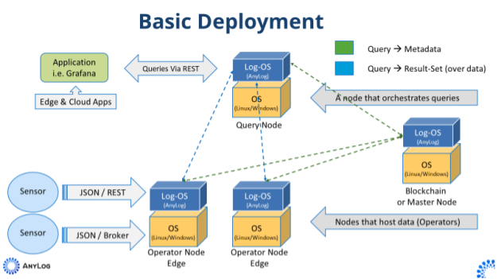

General Configuration of Network
A basic network setup consists of a master node, 1 or more operator nodes and a query node - as shown in the image below. These nodes can be deployed either on the same physical machine (for testing), or unique machines (real deployments across sites).

Deploying EdgeLake
Whether the deployment process is done directly via Docker or Open Horizon, the process is essentially identical.
0. Prior to deployment, docker should be installed via OpenHorizon, but may require
sudo permissions to execute docker commands. In addition, make command is not installed by default.
USER=`whoami`
sudo groupadd docker
sudo usermod -aG docker ${USER}
newgrp docker
sudo apt-get -y install make
- Update the corresponding dotenv file - Master, Operator or Query. Make sure the following params get update accordingly:
- Node Name
- Company Name
- LEDGER_CONN associated with Master node - when TCP binding is set to true, then 127.0.0.1 as the IP value for LEDGER will not work.
# Sample dotenv file
#--- General ---
# Information regarding which AnyLog node configurations to enable. By default, even if everything is disabled, AnyLog starts TCP and REST connection protocols
NODE_TYPE=operator
# Name of the AnyLog instance
NODE_NAME=edgelake-operator1
# Owner of the AnyLog instance
COMPANY_NAME=New Company
#--- Networking ---
# Port address used by AnyLog's TCP protocol to communicate with other nodes in the network
ANYLOG_SERVER_PORT=32148
# Port address used by AnyLog's REST protocol
ANYLOG_REST_PORT=32149
# Port value to be used as an MQTT broker, or some other third-party broker
ANYLOG_BROKER_PORT=""
# A bool value that determines if to bind to a specific IP and Port (a false value binds to all IPs)
TCP_BIND=false
# A bool value that determines if to bind to a specific IP and Port (a false value binds to all IPs)
REST_BIND=false
# A bool value that determines if to bind to a specific IP and Port (a false value binds to all IPs)
BROKER_BIND=false
#--- Database ---
# Physical database type (sqlite or psql)
DB_TYPE=sqlite
# Username for SQL database connection
DB_USER=""
# Password correlated to database user
DB_PASSWD=""
# Database IP address
DB_IP=127.0.0.1
# Database port number
DB_PORT=5432
# Whether to set autocommit data
AUTOCOMMIT=false
# Whether to enable NoSQL logical database
ENABLE_NOSQL=false
# Whether to start to start system_query logical database
SYSTEM_QUERY=false
# Run system_query using in-memory SQLite. If set to false, will use pre-set database type
MEMORY=false
# Whether to enable NoSQL logical database
ENABLE_NOSQL=false
# Physical database type
NOSQL_TYPE=mongo
# Username for SQL database connection
NOSQL_USER=""
# Password correlated to database user
NOSQL_PASSWD=""
# Database IP address
NOSQL_IP=127.0.0.1
# Database port number
NOSQL_PORT=27017
# Store blobs in database
BLOBS_DBMS=false
# Whether (re)store a blob if already exists
BLOBS_REUSE=true
#--- Blockchain ---
# How often to sync from blockchain
BLOCKCHAIN_SYNC=30 second
# Source of where the data is metadata stored/coming from. This can either be master for "local" install or specific
# blockchain network to be used (ex. optimism)
BLOCKCHAIN_SOURCE=master
# TCP connection information for Master Node
LEDGER_CONN=127.0.0.1:32048
#--- Operator ---
# Owner of the cluster
CLUSTER_NAME=new-cluster
# Logical database name
DEFAULT_DBMS=new_company
#--- MQTT ---
# Whether to enable the default MQTT process
ENABLE_MQTT=false
# IP address of MQTT broker
MQTT_BROKER=139.144.46.246
# Port associated with MQTT broker
MQTT_PORT=1883
# User associated with MQTT broker
MQTT_USER=anyloguser
# Password associated with MQTT user
MQTT_PASSWD=mqtt4AnyLog!
# Whether to enable MQTT logging process
MQTT_LOG=false
# Topic to get data for
MSG_TOPIC=edgelake-demo
# Logical database name
MSG_DBMS=new_company
# Table where to store data
MSG_TABLE=bring [table]
# Timestamp column name
MSG_TIMESTAMP_COLUMN=bring [timestamp]
# Value column name
MSG_VALUE_COLUMN=bring [value]
# Column value type
MSG_VALUE_COLUMN_TYPE=float
#--- Monitoring ---
# Whether to monitor the node or not
MONITOR_NODES=true
# Store monitoring in Operator node(s)
STORE_MONITORING=false
# For operator, accept syslog data from local (Message broker required)
SYSLOG_MONITORING=false
#--- Advanced Settings ---
# Whether to automatically run a local (or personalized) script at the end of the process
DEPLOY_LOCAL_SCRIPT=false
# Run code in debug mode
# 0 - without debug
# 1 - show each step as it gets executed
# 2 - interactive debug -- next will move to the next step | continue will jumps to the next section
DEBUG_MODE=0
- Using the
makecommand deploy EdgeLake instance(s).
Steps Deployment
Once the user has updated environment configurations, Makefile can deploy EdgeLake either via a standalone docker or through open horizon. In general the commands are nearly identical.
- Start Node
- Docker:
make up EDGELAKE_TYPE=[NODE_TYPE - master, operator or query]
- Open Horizon:
# publish service and policies
make publish EDGELAKE_TYPE=[NODE_TYPE - master, operator or query]
# for updates, publish service and policies
make publish-version EDGELAKE_TYPE=[NODE_TYPE - master, operator or query]
# run OH agent instance(s)
make deploy EDGELAKE_TYPE=[NODE_TYPE - master, operator or query]
# run instance
make agent-run EDGELAKE_TYPE=[NODE_TYPE - master, operator or query]
- View Container (logs)
# attach to container - not supported with open horizon
make attach EDGELAKE_TYPE=[NODE_TYPE - master, operator or query]
# view logs
make logs EDGELAKE_TYPE=[NODE_TYPE - master, operator or query]
make hzn-logs EDGELAKE_TYPE=[NODE_TYPE - master, operator or query]
# Attach to executable CLI (bash) - not supported with open horizon
make exec EDGELAKE_TYPE=[NODE_TYPE - master, operator or query]
- Stop Node
- Docker
# stop docker container but keep data and image persistent
make down EDGELAKE_TYPE=[NODE_TYPE - master, operator or query]
# stop container and remove volume(s)
make clean-vols EDGELAKE_TYPE=[NODE_TYPE - master, operator or query]
# stop container and remove volume(s) and images
make clean EDGELAKE_TYPE=[NODE_TYPE - master, operator or query]
- Open Horizon
make hzn-clean EDGELAKE_TYPE=[NODE_TYPE - master, operator or query]
Validate Node
- Test Node -- validate node is accessible, blockchain is upto date and which processes are running
make test-node
<<COMMENT
REST Connection Info for testing (Example: 127.0.0.1:32149):
172.232.157.208:32149
Node State against 172.232.157.208:32149
edgelake-operator@172.232.157.208:32148 running
Test Status
---------------------------------------------|---------------------------------------------------------------------------------|
Metadata Version |bc5b778a91949a980f4013e8fd2da3dd |
Metadata Test |Pass |
TCP test using 172.232.157.208:32148 |[From Node 172.232.157.208:32148] edgelake-operator@172.232.157.208:32148 running|
REST test using http://172.232.157.208:32149 |edgelake-operator@172.232.157.208:32148 running |
Process Status Details
---------------|------------|-----------------------------------------------------------------------------|
TCP |Running |Listening on: 172.232.157.208:32148, Threads Pool: 6 |
REST |Running |Listening on: 172.232.157.208:32149, Threads Pool: 6, Timeout: 30, SSL: False|
Operator |Running |Cluster Member: True, Using Master: 127.0.0.1:32048, Threads Pool: 3 |
Blockchain Sync|Running |Sync every 30 seconds with master using: 127.0.0.1:32048 |
Scheduler |Running |Schedulers IDs in use: [0 (system)] [1 (user)] |
Blobs Archiver |Not declared| |
MQTT |Not declared| |
Message Broker |Not declared|No active connection |
SMTP |Not declared| |
Streamer |Running |Default streaming thresholds are 60 seconds and 10,240 bytes |
Query Pool |Running |Threads Pool: 3 |
Kafka Consumer |Not declared| |
gRPC |Not declared| |
<<COMMENT
- Test Network -- Node is able to communicate with (all) other nodes inn the network
make test-network
<<COMMENT
REST Connection Info for testing (Example: 127.0.0.1:32149):
172.232.157.208:32149
Test Network Against: 172.232.157.208:32149
Address Node Type Node Name Status
---------------------|---------|-----------------|------|
172.232.157.208:32048|master |edgelake-master | + |
172.232.157.208:32348|query |edgelake-query | + |
172.232.157.208:32148|operator |edgelake-operator| + |
<<COMMENT
Other
- Help
make help EDGELAKE_TYPE=operator
<<COMMENT
=====================
Docker Deployment Options
=====================
build pull latest image for anylogco/edgelake:1.3.2408
up bring up docker container based on EDGELAKE_TYPE
attach attach to docker container based on EDGELAKE_TYPE
logs view docker container logs based on EDGELAKE_TYPE
down stop docker container based on EDGELAKE_TYPE
clean (stop and) remove volumes and images for a docker container basd on EDGELAKE_TYPE
tset-node using cURL make sure EdgeLake is accessible and is configured properly
test-network using cURL make sure EdgeLake node is able to communicate with nodes in the network
make: hzn: Command not found
==============================
OpenHorizon Deployment Options
==============================
publish-service publish service to OpenHorizon
remove-service remove service from OpenHorizon
publish-service-policy publish service policy to OpenHorizon
remove-service-policy remove service policy from OpenHorizon
publish-deployment-policy publish deployment policy to OpenHorizon
remove-deployment-policy remove deployment policy from OpenHorizon
agent-run start OpenHorizon service
hzn-clean stop OpenHorizon service
<<COMMENT
- Check
make check EDGELAKE_TYPE=operator
<<COMMENT
=====================
ENVIRONMENT VARIABLES
=====================
EDGELAKE_TYPE default: generic actual: operator
DOCKER_IMAGE_BASE default: anylogco/edgelake actual: anylogco/edgelake
DOCKER_IMAGE_NAME default: edgelake actual: edgelake
DOCKER_IMAGE_VERSION default: latest actual: 1.3.2408
DOCKER_HUB_ID default: anylogco actual: anylogco
HZN_ORG_ID default: myorg actual: myorg
HZN_LISTEN_IP default: 127.0.0.1 actual: 127.0.0.1
SERVICE_NAME actual: service-edgelake-operator
SERVICE_VERSION actual: 1.3.2408
===================
EDGELAKE DEFINITION
===================
NODE_TYPE default: generic actual: operator
NODE_NAME default: edgelake-node actual: edgelake-operator
COMPANY_NAME default: New Company actual: New Company
ANYLOG_SERVER_PORT default: 32548 actual: 32148
ANYLOG_REST_PORT default: 32549 actual: 32149
LEDGER_CONN default: 127.0.0.1:32049 actual: 66.228.62.212:32048
<<COMMENT
Review Deploy EdgeLake for farther details and specific examples